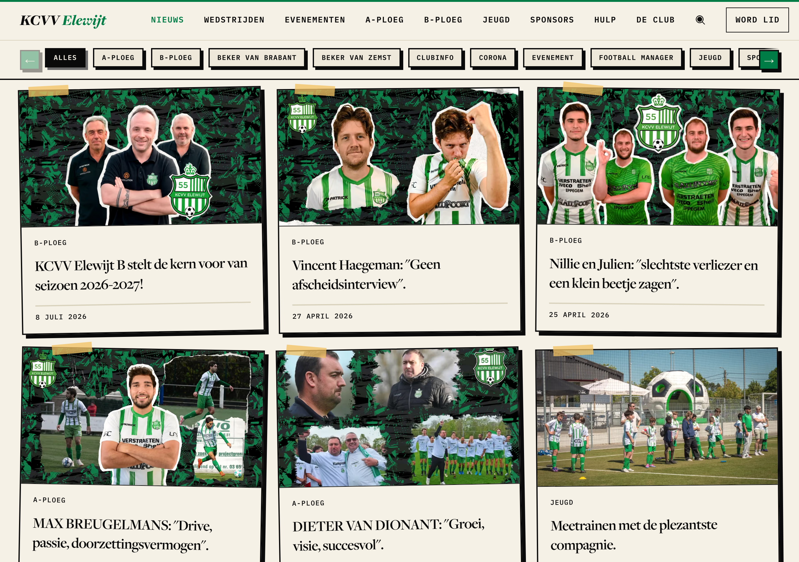
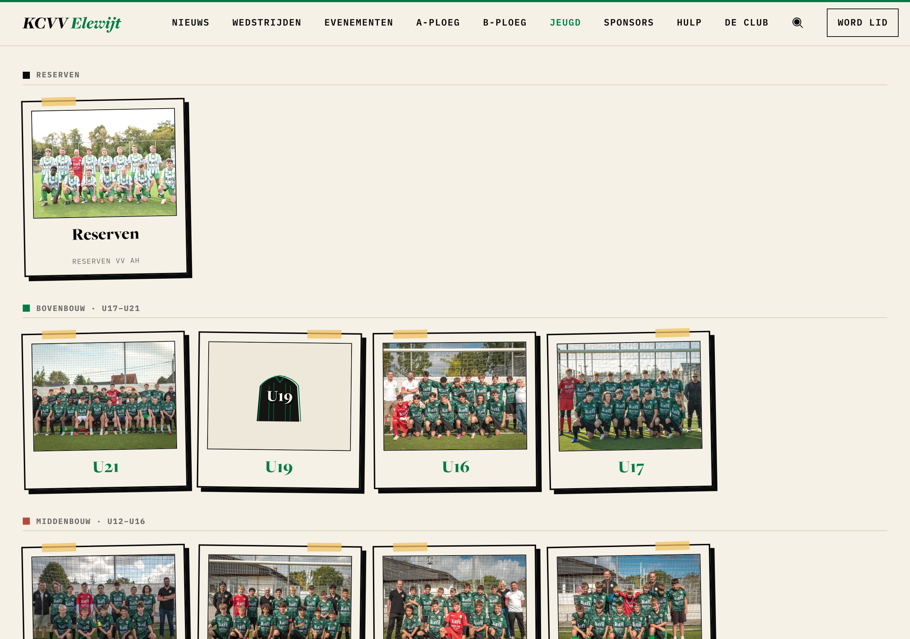
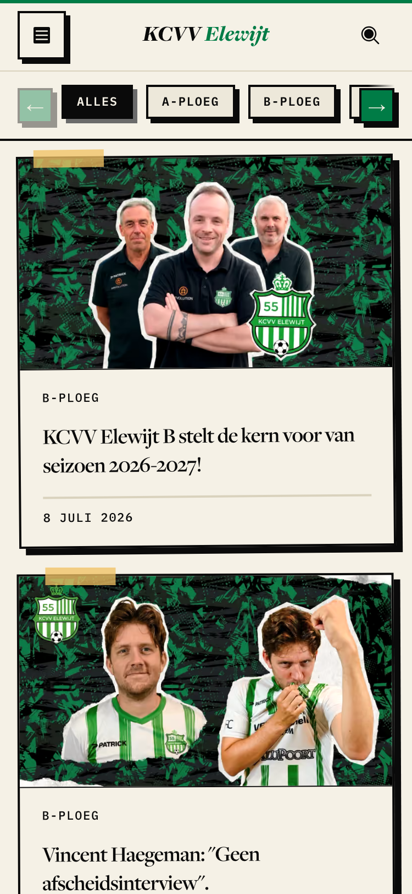
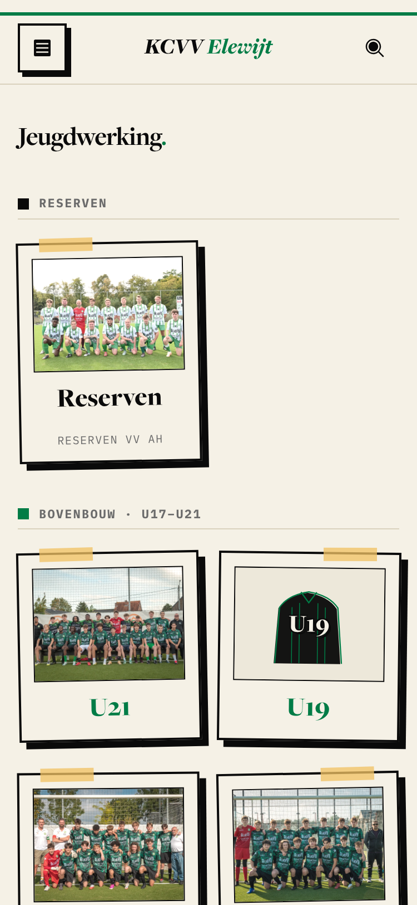
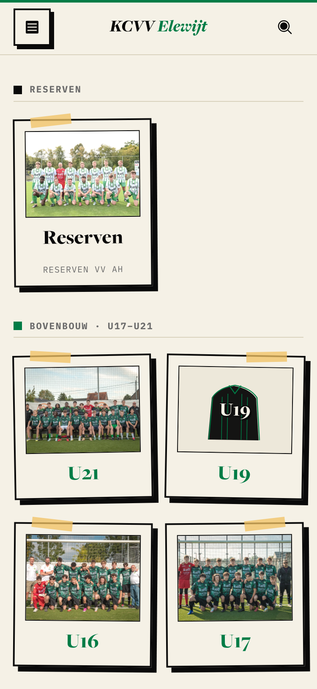

<title>Tape Angle Check</title>
<style>
/* Layout: one row per page and width, before beside after, stacked on phones. */
:root {
  --bg: #f4f0e6; --fg: #14140f; --muted: #5b5a52; --line: #d9d3c4; --accent: #0b7a3b;
  --display: "Fraunces", Georgia, serif; --mono: "IBM Plex Mono", ui-monospace, monospace;
}
@media (prefers-color-scheme: dark) { :root:not([data-theme="light"]) { --bg: #16170f; --fg: #eeeadf; --muted: #a8a596; --line: #34352b; --accent: #4cc27a; color-scheme: dark } }
:root[data-theme="dark"] { --bg: #16170f; --fg: #eeeadf; --muted: #a8a596; --line: #34352b; --accent: #4cc27a; color-scheme: dark }
body { background: var(--bg); color: var(--fg); font: 16px/1.5 var(--mono); }
main { max-width: 1400px; margin: 0 auto; padding: 32px 16px 64px; display: grid; gap: 40px; }
h1 { font: 600 2rem/1.1 var(--display); margin: 0; text-wrap: balance; }
p { margin: 8px 0 0; max-width: 65ch; color: var(--muted); font-size: 0.9rem; }
table { border-collapse: collapse; font-size: 0.85rem; margin-top: 12px; font-variant-numeric: tabular-nums; }
th, td { text-align: left; padding: 4px 16px 4px 0; border-bottom: 1px solid var(--line); }
th { text-transform: uppercase; letter-spacing: 0.06em; font-weight: 500; color: var(--muted); }
section h2 { font: 500 0.8rem var(--mono); text-transform: uppercase; letter-spacing: 0.08em; margin: 0 0 12px; color: var(--accent); }
.pair { display: grid; grid-template-columns: 1fr 1fr; gap: 16px; }
.pair.narrow { grid-template-columns: repeat(2, minmax(0, 360px)); }
figure { margin: 0; min-width: 0; }
figcaption { font-size: 0.75rem; text-transform: uppercase; letter-spacing: 0.08em; color: var(--muted); margin-bottom: 6px; }
img { display: block; width: 100%; border: 1px solid var(--line); }
@media (max-width: 700px) { .pair, .pair.narrow { grid-template-columns: 1fr; } }
</style>
<link rel="stylesheet" href="https://fonts.googleapis.com/css2?family=Fraunces:wght@600&family=IBM+Plex+Mono:wght@400;500&display=swap">
<main>
  <header>
    <h1>Does a card's tape angle follow the card or its slot?</h1>
    <p>Ticket #3302. Production pages with the proposed two-tier tilt scale injected as CSS. Before is today. After uses the new values below. Nothing is built.</p>
    <table>
      <tr><th>Tier</th><th>Used by</th><th>Today</th><th>Proposed</th></tr>
      <tr><td>Slight</td><td>Card lean</td><td>±0.25°, ±0.5°</td><td>±0.5°, ±1°</td></tr>
      <tr><td>Bigger</td><td>Tape strip</td><td>±0.25°, ±0.5°</td><td>±2°, ±4°, ±6°</td></tr>
    </table>
    <p>The shots use four of the six tape values (−6°, −2°, +4°, +6°). On /jeugd every tape is the same today, so the after shot cycles the four values to stand in for a per-team hash.</p>
  </header>
  <section><h2>/nieuws · 1280px</h2><div class="pair">
    <figure><figcaption>Before</figcaption></figure>
    <figure><figcaption>After</figcaption></figure>
  </div></section>
  <section><h2>/jeugd · 1280px</h2><div class="pair">
    <figure><figcaption>Before</figcaption></figure>
    <figure><figcaption>After</figcaption></figure>
  </div></section>
  <section><h2>/nieuws · 375px</h2><div class="pair narrow">
    <figure><figcaption>Before</figcaption></figure>
    <figure><figcaption>After</figcaption></figure>
  </div></section>
  <section><h2>/jeugd · 375px</h2><div class="pair narrow">
    <figure><figcaption>Before</figcaption></figure>
    <figure><figcaption>After</figcaption></figure>
  </div></section>
</main>
